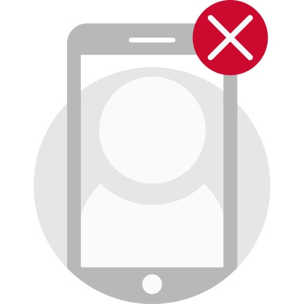

<!--<ion-header>-->
  <!--<ion-navbar>-->
    <!--<ion-title>-->
      <!--Fehlender Account-->
    <!--</ion-title>-->
  <!--</ion-navbar>-->
<!--</ion-header>-->

<ion-content>
  <div id="no-user-info-container">
    
    <h6 ion-text color="text-dark">Fehlender Account</h6>
    <p ion-text color="text-disabled" class="light">
      Es ist noch kein Account in der App registriert.
      Bitte registrieren Sie Ihr TeaCo-Konto über Ihren persönlichen TeaCo-Link, um die App im vollem Umfang nutzen zu können.
    </p>
    <button ion-button round (click)="openRegisterUserModal()">Account registrieren</button>
  </div>
</ion-content>